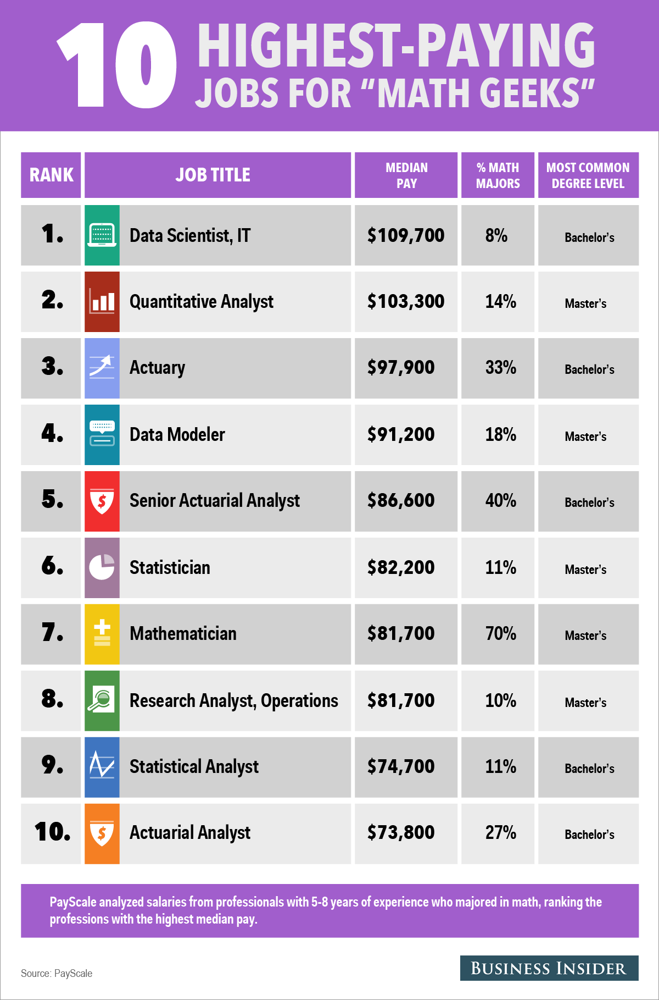

Who is an Actuary?
September 29, 2022 by Abigail McFarlane
According to the Society of Actuaries, actuaries are highly sought-after professionals who develop and
communicate solutions for complex financial issues. They have a deep understanding of mathematics,
statistics and business management. With this, they help businesses grow and provide value to their customers.
Actuaries help leaders make strategic decisions and consumers prepare for their future.
Actuaries are in demand. They work for and with businesses with a financial focus. Businesses including insurance-life,
health, property-casualty, even pet insurance. Also, banking, investments, government, energy, e-commerce, marketing,
employee benefits, product development, enterprise risk management, predictive analytics, consulting and more.
According to the Nigerian Actuarial Society, “An actuary is a business professional who uses mathematical and statistical
knowledge to solve complex financial problems…”.
Actuaries generally have a good understanding of the financial system, are
highly analytical and have great problem-solving skills. Actuaries help their organizations or clients to solve complex financial
issues especially those that deal with uncertainty. Actuaries usually have different academic backgrounds such as mathematics, statistics,
economics, actuarial science, insurance, physics, accounting and finance. Nonetheless, they all have one thing in common - an interest in math and statistics.
Why do I want to become an Actuary?
October 1,2022 by Abigail McFarlane
Like alot of persons, my career goals were not constant throughout my lifetime.
From the ripe age of 2, I had my eyes set on becoming a doctor. Although i always knew i loved mathematics,
I was ignornat to the various opportunities they were in the mathematical field.
I was always good in science, so i decided to continue on that path while not giving up on my love for mathematics.
So for CSEC, I studied the three sciences needed (i.e. Biology, Chemistry and Physics) and also Addistional Mathematics.
Excelled in the CXC CSEC exams, and decided to continue Biology and Chemistry at the CAPE level. I still refused to abandon
passion for maths, so i studied in Pure Mathematics.

During sixth form, I had began to realize that I was not passionate about science in the same way I was passionate about mathematics.
Yes, I was good at it and had no doubt that I would excel in the profession, but I wanted to pursue something I genuinely enjoyed.
So, I took the internet, searching for the highest paying jobs for math-lovers. various came up, but one in particular caught my eye.
That is when I started to dig deeper into the actuarial profession, speaking to every and anyone about the profession.
That brings us to where I'm at now. I am currently in my final year completing a Bachelor's of Science in Actuarial Science, aiming for a first class honours.
I also, completed my first SOA exam (Exam Probability) and awaiting my result. Although I do not know what the future holds, I hope I am doing what I love and am happy.
Because at the end of the day, happiness is what is important.